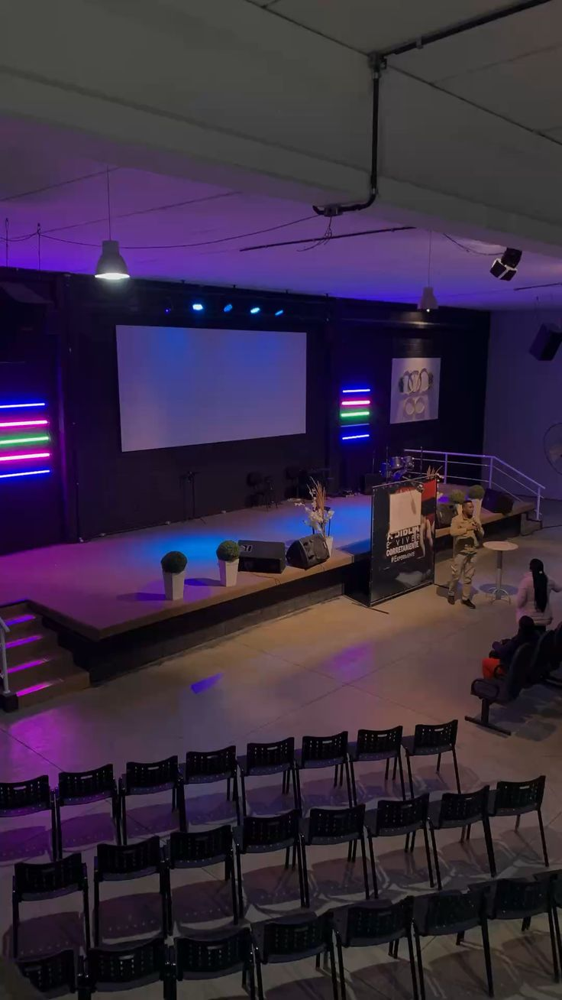

Our Ministries
Music Ministry
Music Ministry plays a crucial role in leading the congregation in Saturday's worship through song and praise.
Prayer Ministry
Prayer Ministry involved in Interceding for the church, campus, and community in faith.

New Zion Ministry
Welcome to New Zion Ministry,We are dedicated to serve christ Through song
Acts on Mission Ministry
ACTs on Mission Ministry is a passionate group dedicated to fulfilling the Great Commission through active evangelism, community outreach, and discipleship. The ministry empowers members to live out their faith by serving others, spreading God’s love, and transforming lives through Christ-centered missions..

Christ Messengers
Christ Messengers is a dynamic ministry committed to spreading the gospel and leading others to Christ through evangelism, music, and service. The group inspires spiritual growth, unity, and dedication among members as they share God’s word with love and purpose.

Medical Department Ministry
Medical Missionary Department is devoted to promoting health, healing, and hope through Christ-centered service. It trains members to care for both body and soul, sharing God’s love through health education, community outreach, and compassionate acts of medical and spiritual ministry.

Personal Ministry
Personal Ministry is focused on equipping church members to share their faith and lead others to Christ through personal witness and service. It encourages every believer to be an active missionary in daily life, promoting spiritual growth, evangelism, and community outreach for God’s glory.

Adventist Ladies Organisation
Adventist Ladies Organization (ALO) is a vibrant ministry that brings together women to grow spiritually, support one another, and serve God with dedication. At Kisii University SDA, ALO empowers ladies to live purposefully, nurture their faith, and use their talents to impact the church and community positively. Through fellowship, mentorship, and outreach programs, the ministry inspires women to be Christ-centered leaders and shining examples of love and service.
.jpeg)
Adventist Men Organisation
Adventist Men Organization (AMO) is a dedicated ministry that unites men to grow in faith, leadership, and service. At Kisii University SDA, AMO empowers men to live with purpose, uphold Christian values, and serve as spiritual leaders in their homes, church, and society. Through fellowship, mentorship, and community outreach, the ministry nurtures men to be strong, responsible, and faithful ambassadors of Christ.